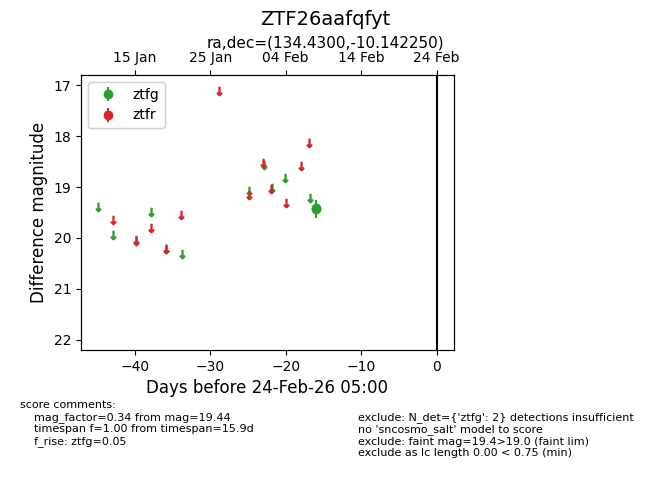
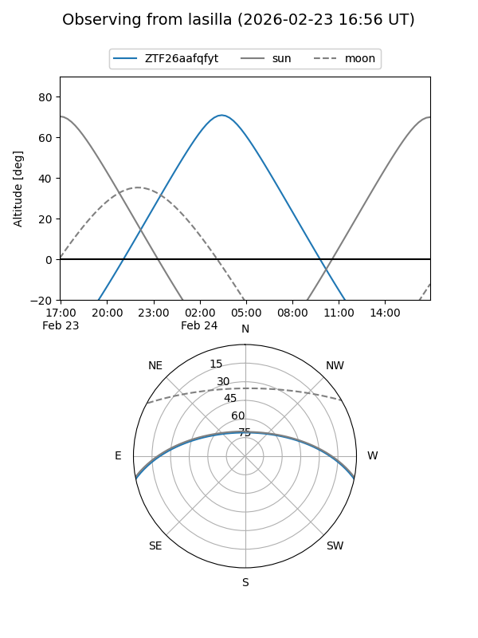
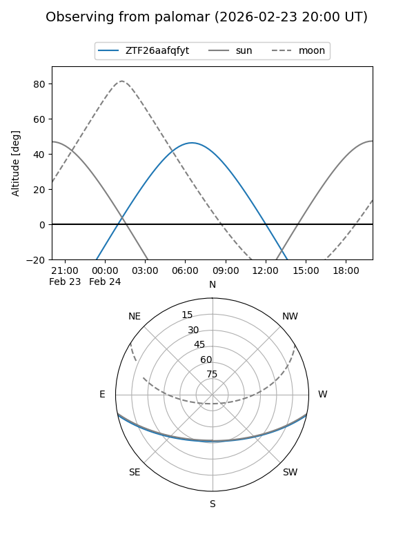

ZTF26aafqfyt
Target ZTF26aafqfyt at 2026-02-24 09:08
Aliases and brokers:
FINK: link
Lasair: link
ALeRCE: link
alt names
ZTF26aafqfyt (ztf,fink_ztf)
Coordinates:
equatorial (ra, dec) = 134.4300,-10.14225
equatorial (HMS+DMS) = 08:57:43.21,-10:08:32.10
galactic (l, b) = (237.9676,+22.23308)
Flags:
Photometry:
last ztfg=19.44
2 ztfg detections
Lightcurve

Visibility


Additional plots